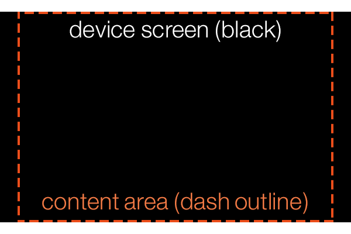
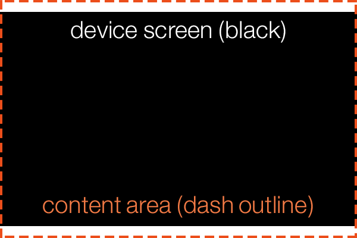

Configuration settings for an app are defined using a config.lua file written in Lua syntax. It should be placed in the project’s base directory.
Although config.lua is a Lua file, its intention is merely to configure the app in advance of its primary functionality starting in main.lua. You should not make Lua API calls within the config.lua file or perform any actions beyond simply defining the supported tables and
The config.lua file is set up using a content table nested within a application table as follows:
application =
{
content =
{
-- Parameters
}
}
Since most apps are developed for multiple devices and screen resolutions, Corona features several content scaling options. This allows you to use a common set of screen coordinates while Corona automatically scales text, vector objects, and images to different resolutions depending on the device.
Corona can scale both upward or downward depending on your starting resolution. It can also substitute image files of differing resolution when needed, ensuring that your app appears clear and sharp on all devices (see Dynamic Image Selection below).
A fundamental concept behind content scaling is content area. In Corona, your base content area can be whatever you wish, but often it’s based around a common screen width/height aspect ratio like 2:3, for example 320×480.
The content area represents the overall “stage” on which text, vector objects, and image assets are displayed. Everything will be positioned in relation to this content area, which may or may not match the screen’s actual pixel resolution. The content area will be scaled to fit the screen, with subtle differences dictated by the scale definition (see scale below).
The internal coordinate system is also dependent on the content area, with coordinates (0,0) residing in the top-left corner of the content area, not necessarily the top-left corner of the screen. For more information on the Corona coordinate system, see the Group Programming Guide.
The content area is defined by the width and height values in config.lua. If you omit or set either of these values to 0, content scaling will not be used.
application =
{
content =
{
width = 320,
height = 480,
}
}
The content area should always be defined in respect to portrait orientation. If your app is designed for landscape orientation, you should still set the width and height according to portrait orientation. In the example above, a width and height parameters of 320 and 480 respectively, not 480 and 320.
To control an app’s orientation on actual devices, you must define specific parameters in the build.settings file. See Project Build Settings for more information.
The scaling method of the content area is determined by the scale value. If you omit this (not recommended), the width and height values will be ignored and the content area will be set to the device’s actual pixel width and height.
application =
{
content =
{
width = 320,
height = 480,
scale = "letterbox",
}
}
The possible scale values include the following:
"letterbox" — scales the content area to fill the screen while preserving the same aspect ratio. The entire content area will reside on the screen, but this might result in “black bars” on devices with aspect ratios that differ from your content aspect ratio. Note, however, that you can still utilize this “blank” area and fill it with visual elements by positioning them or extending them outside the content area bounds. Essentially, "letterbox" is an ideal scale mode if you want to ensure that everything in your content area appears within the screen bounds on all devices.
"zoomEven" — scales the content area to fill the screen while preserving the same aspect ratio. Some content may “bleed” off the screen edges on devices with aspect ratios that differ from your content aspect ratio. Basically, "zoomEven" is a good option to ensure that the entire screen is filled by the content area on all devices (and content clipping near the outer edges is acceptable).
| letterbox | zoomEven |
|---|---|
|  |  |
"adaptive" — instead of a static content area, a dynamic content width and height is chosen based on the device. See the Adaptive Scaling (Resolution Independence) guide for details. Note that "adaptive" mode is not supported for macOS desktop apps or Win32 desktop apps.
"zoomStretch" — scales the content area to fill the entire screen on any device, ignoring the content aspect ratio. This mode should be used with caution since it will stretch/warp images and text if the device’s aspect ratio doesn’t exactly match the content area’s aspect ratio.
By default, scaled content is centered on the screen. In letterbox scale mode, empty screen area will be evenly divided between both sides. In zoomEven mode, the bleed area will be cropped equally on both sides.
If you need to align the content area to a particular edge of the screen, you can use the xAlign and yAlign values.
xAlign — string value which sets the alignment in the x direction. Possible values are "left", "center", or "right".
yAlign — string value which sets the alignment in the y direction. Possible values are "top", "center", or "bottom".
application =
{
content =
{
width = 320,
height = 480,
scale = "letterbox",
xAlign = "left",
yAlign = "top"
}
}
In addition to content scaling, Corona supports dynamic image selection. If you are developing an app for both normal and Retina/HD devices, you should not rely on Corona to simply scale one set of images across a wide array of screen resolutions. There are several issues related to this:
If you design all of your images in low resolution and allow Corona to scale them up for Retina/HD devices, the images will appear blurry or pixelated. Not only will this result in poor visual appearance, but it may cause the app to be rejected before it reaches the marketplace.
In contrast, if you design all of your images for Retina/HD and allow Corona to scale them down for lower resolution devices, the larger images will require the same amount of texture memory on those devices. This may adversely affect the performance of your app — or worse, those images will not appear if they exceed the maximum texture size on a device.
The solution is to create multiple versions of every image, tailored for two or three different resolutions, and name them according to the “image set” they belong to. On each device, Corona will automatically select images from the set that most closely matches the content area and scale.
This feature is only supported by images displayed using display.newImageRect() or by sprites and images taken from image sheets that contain the overall sheet size parameters.
To set up dynamic image selection, you must include an imageSuffix table within the content table. Inside this table, declare at least one
imageSuffix =
{
["@2x"] = 2.0,
["@4x"] = 4.0
}
As indicated, each image suffix must be specified within brackets and quotes as in ["@2x"]. The suffix can be named whatever you want, but it should be short and logical since you must append the same suffix to all image files designed for that image set. When adding a suffix to each image file, do not include the bracket or quotes — just append the suffix itself, for example myImage@2x.png or myImage@4x.png.
The second part of each declaration is the scale factor. This value specifies the scale threshold above which Corona will use images in that suffix set. The following code can help you determine the proper values:
-- For if your app is in portrait orientation: print( display.pixelWidth / display.actualContentWidth ) -- For if your app is in landscape orientation: print( display.pixelWidth / display.actualContentHeight )
Add this code to your project, access the Corona Simulator, and use Window → View As to simulate different devices. Note the output in the Corona Simulator Console — this is the scale factor for the device. If the value on a particular device is greater than or equal to the number you specify for the scale factor, Corona will use images from that suffix set.
If you use widgets from the Corona widget library, you must adhere to the standardized @2x and @4x suffix options, otherwise the proper
In the following example, just one suffix is defined ("@2x"), but it accommodates several
application =
{
content =
{
width = 320,
height = 480,
scale = "letterbox",
xAlign = "center",
yAlign = "center",
imageSuffix =
{
["@2x"] = 1.5
}
}
}
Although you can define as many image sets as you wish, there are simply too many screen sizes and aspect ratios to achieve a perfect 1:1 ratio on all of them. Thus, you must accept some degree of scaling, even when using dynamic image selection. In most cases, you should set up image suffixes that target devices of similar resolution, then allow Corona to scale the images up or down slightly depending on the device. This minor degree of scaling will generally not be perceived by the end user, since most modern devices have a very high pixel density. As noted at the top of this section, it’s better to scale images down versus up and you should attempt to construct a scaling setup that achieves this on the most popular devices.
Several properties are exposed within Corona to help you work with scaled content, including those mentioned below. Please refer to the API Reference for a complete list.
display.contentWidth and display.contentHeight —
display.pixelWidth and display.pixelHeight —
display.viewableContentWidth and display.viewableContentHeight — zoomEven scaling, as it will reveal the viewable (uncropped) measurements, in pixels.
display.actualContentWidth and display.actualContentHeight — scale setting mentioned above.
display.contentCenterX and display.contentCenterY —
In the Corona Simulator, there is a setting under Preferences called Show Runtime Errors which defaults to on. This global setting triggers
You can also set this on a per-app basis from config.lua to control error messages while running the app on a device. showRuntimeErrors accepts a boolean value true or false)showRuntimeErrors will default to true, otherwise it will default to false. Obviously, an explicit setting will override the default.
application =
{
showRuntimeErrors = true,
}
Remember that disabling error messages doesn’t mean that errors aren’t occurring. The
Another option is to use the unhandledError Runtime listener to trap errors which would otherwise trigger an error return value doesn’t matter since the
function myUnhandledErrorListener( event )
local iHandledTheError = true
if ( iHandledTheError ) then
print( "Handling the unhandled error", event.errorMessage )
else
print( "Not handling the unhandled error", event.errorMessage )
end
return iHandledTheError
end
Runtime:addEventListener( "unhandledError", myUnhandledErrorListener )
The default frame rate is 30 frames per second, but you can set it to 60 frames per second by adding the fps key. Values other than 30 or 60 will be ignored.
application =
{
content =
{
fps = 60,
}
}
The Corona licensing library lets you confirm that the app was bought from a store. To implement licensing, the license table must be added to the application table of config.lua:
application =
{
license =
{
google =
{
key = "YOUR_LICENSE_KEY",
},
},
}
Please see the licensing documentation for full details on how to implement and execute licensing.
This is used to override the default shader precision for all OpenGL ES shaders (on devices).
Acceptable values are "highp", "mediump", and "lowp".
You should not specify this unless you absolutely require higher precision and see no performance impact from setting it.
application =
{
content =
{
shaderPrecision = "highp",
},
}
Assigning a string value as outlined above will change the meaning of all precision qualifier macros. Thus, another option is to set individual precision macros by assigning a table to shaderPrecision. This table should contain Corona precision qualifier macros as keys and OpenGL ES precision qualifiers as values, for example:
application =
{
content =
{
shaderPrecision =
{
P_POSITION = "highp",
P_UV = "mediump",
P_COLOR = "lowp",
},
},
}
Acceptable keys are P_DEFAULT, P_RANDOM, P_NORMAL, P_POSITION, P_UV, and P_COLOR.
Acceptable values for these keys are "highp", "mediump", and "lowp".
For more information, see the Precision Qualifier Macros section of the Custom Shader Effects guide.
Assigning a value/table to shaderPrecision will change the behavior and performance of all custom shader effects and